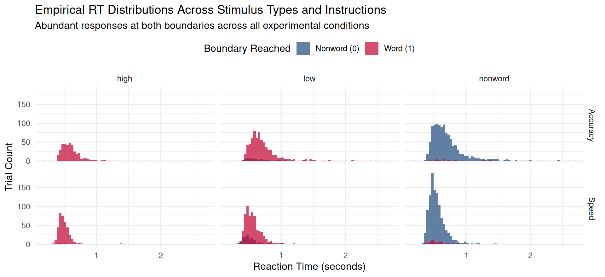
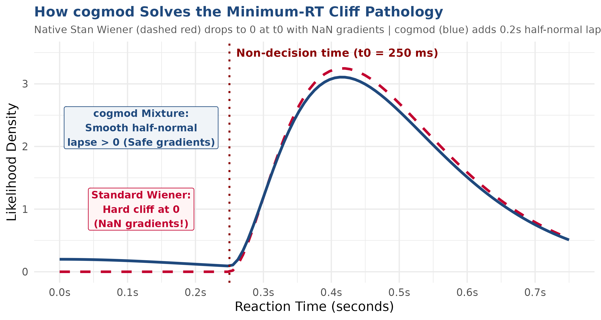
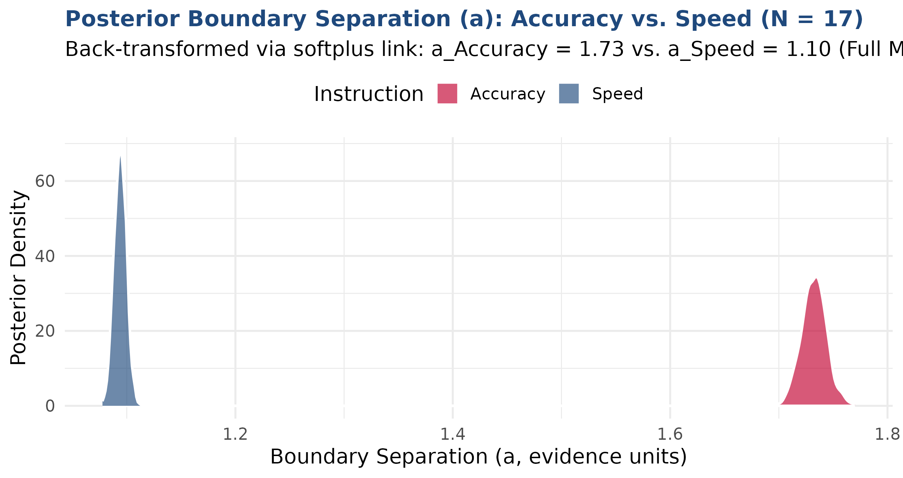
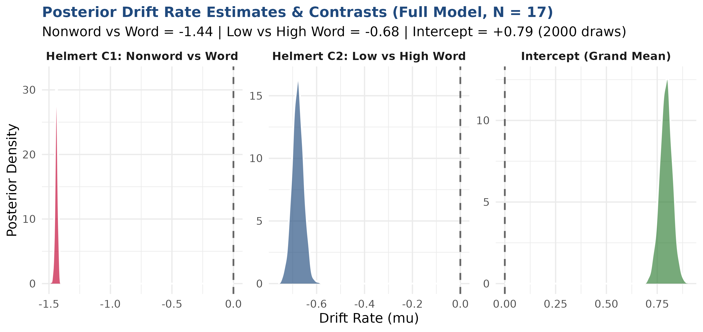
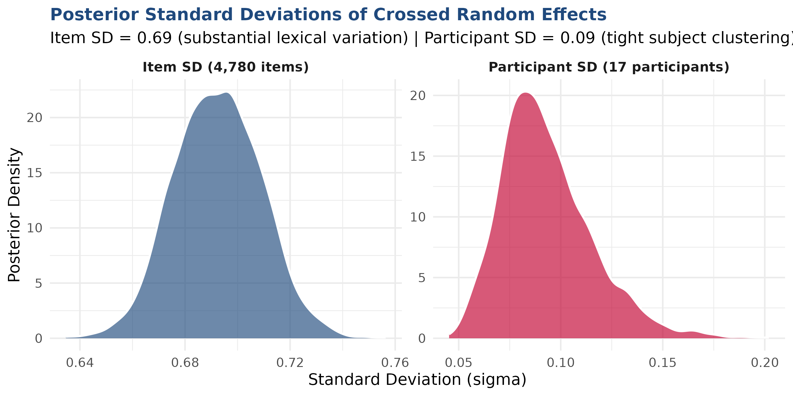
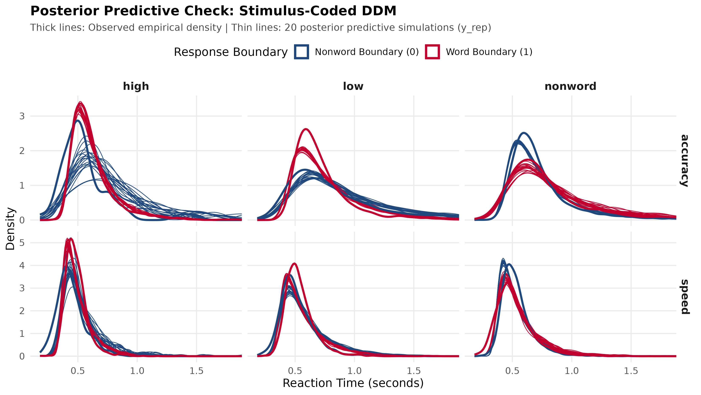

| Parameter | Estimate | EstError | 95% CrI | Rhat | Bulk_ESS | Interpretation |
|---|---|---|---|---|---|---|
| Intercept (Grand Mean Drift) | 0.793 | 0.031 | [0.73, 0.85] | 1.00 | 1798 | Unweighted mean drift (positive due to 2:1 category imbalance) |
| Boundary Separation (Intercept) | 1.112 | 0.008 | [1.10, 1.13] | 1.00 | 3382 | Baseline boundary: softplus(1.11) ≈ 1.40 evidence units |
| Starting Point Bias (Intercept) | 0.025 | 0.009 | [0.01, 0.04] | 1.00 | 3569 | Starting bias: plogis(0.025) ≈ 0.506 (unbiased) |
| Non-Decision Time (Intercept) | -1.102 | 0.002 | [-1.11, -1.10] | 1.00 | 3270 | Baseline NDT: exp(-1.10) ≈ 332 ms latency |
| stimulus_type: Nonword vs Word | -1.439 | 0.012 | [-1.46, -1.42] | 1.00 | 2565 | Lexical discrimination: Nonwords drift down (-), Words up (+) |
| stimulus_type: Low vs High Word | -0.678 | 0.024 | [-0.73, -0.63] | 1.00 | 2779 | Frequency effect: Low-frequency slower uptake than high |
| Condition: Acc vs Speed | 0.091 | 0.014 | [0.06, 0.12] | 1.00 | 2799 | Slight overall drift modulation across instructions |
| Nonword_vs_Word : Acc_vs_Speed | -0.043 | 0.010 | [-0.06, -0.02] | 1.00 | 2858 | Modulation of lexical discrimination by speed/acc |
| Low_vs_High : Acc_vs_Speed | 0.063 | 0.020 | [0.02, 0.10] | 1.00 | 3586 | Modulation of frequency sensitivity by speed/acc |
| Boundary Separation: Acc vs Speed | 0.426 | 0.008 | [0.41, 0.44] | 1.00 | 4765 | Accuracy widens boundaries: a_Acc (1.73) > a_Spd (1.09)! |
| Non-Decision Time: Acc vs Speed | 0.026 | 0.002 | [0.02, 0.03] | 1.00 | 2972 | NDT difference between conditions is tiny (~17 ms) |
Drift Diffusion Modeling in R with brms & cogmod
It can be done!
Dr. Bernhard Angele
Tuesday, September 8, 2026
Presentation slides
Scan the QR code or visit the link to follow along on your own device:
Interactive presentation on GitHub Pages:
https://bernhardangele.github.io/sepex_ddm_workshop_2026/
- Interactive slides with zoomable plots & code
- Accessible on smartphones, tablets, and laptops
Session overview
Drift Diffusion Modeling in R with brms & cogmod
What we will cover:
- The data and packages: Lexical decisions in
rtdistsand gettingcogmod - Variables and design: Response coding or error coding?
- Model architecture: Setting up fixed and crossed random effects
- Code walkthrough: Step-by-step through
fit_ddm_stimulus_coding.R - Model results: Reading parameters, posterior distributions, and credible intervals
- Model validation: Posterior predictive checks (PPC) and comparison with Wagenmakers et al. (2008)
The dataset: Wagenmakers et al. (2008)
- We model Experiment 1 from Wagenmakers et al. (2008) (Lexical Decision Task). This data set was also analyzed in Heathcote & Love (2012) and the brms tutorial by Henrik Singmann (Singmann, 2017).
- The task:
- On each trial, participants decide as quickly and accurately as possible whether a letter string is an English word (e.g., TABLE) or a nonword (e.g., FLORP).
- Participants and scope:
- 17 participants tested across multiple sessions.
- 4,780 unique items (words and nonwords).
- Over 31,000 total observations analyzed simultaneously.
- Experimental manipulations:
- Instruction: Speed vs. Accuracy blocks (within-subjects).
- Stimulus type: Nonwords vs. Words varying in lexical frequency (High, Low, Very Low).
Where to find the data and packages
The dataset (rtdists)
The raw and censored data are bundled directly inside the
rtdistsR package (Singmann, 2017):Accessible as a ready-to-use data frame
speed_acc.pakautomatically resolves and installs any required dependencies.
The cogmod package
cogmod(Makowski, 2025) provides custom Stan families and helpers forbrms.- Where to get it:
- GitHub: github.com/DominiqueMakowski/cogmod
- Install via
pak(installs dependencies automatically):
Data loading and cleaning: The censor flag
The speed_acc dataset includes a built-in boolean variable called censor that contains exclusion criteria:
Excluded data:
Impact on DDM
- Unfiltered fast trials would artificially lower the estimate of non-decision time (\(t_0\)).
- Late responses artificially inflate boundary separation (\(a\)).
- Filtering
!censoryields 31,351 clean observations across all 17 participants.
Dependent variables: RT and response choice
1. Reaction time (rt)
- Reaction time is measured strictly in seconds (\(0.18 \le RT \le 3.0\) s).
- Don’t use milliseconds:
cogmodassumes seconds – using milliseconds will cause it to fail.
Why response coding instead of error coding?
Accuracy / error coding
- Lower (0) = Correct, Upper (1) = Error.
- Data sparsity: Accuracy in lexical decisions is ~95%.
- 95% of trials end at Boundary 0 (correct); only 5% end at Boundary 1 (error)
- Leads to poor estimation of boundary separation (\(a\)) and non-decision time (\(t_0\)).
Response / stimulus coding
- Lower (0) = Nonword key, Upper (1) = Word key.
- Even split: ~50/50 distribution of observations.
- Meaningful drift rate:
- Words accumulate evidence toward 1 (\(\mu > 0\)).
- Nonwords accumulate toward 0 (\(\mu < 0\)).
- True bias (\(z\)): Measures physical preference for the “word” key.
Empirical distributions

Independent variables and factor levels
Our experimental design incorporates two categorical predictors:
- Instruction condition (
Condition):- 2 levels:
accuracyvs.speed(blocked instructions).
- 2 levels:
- Stimulus type (
stimulus_type):- Raw categories:
high,low,very_low, andnonword. - We collapse
lowandvery_lowinto a single level:low. - This may be questionable, but lowers model complexity.
- Homework: Fit a model with all four levels!
- Resulting 3 levels:
nonword(pseudowords)low(low and very low frequency words)high(high frequency words)
- Raw categories:
Contrast coding: Orthogonal Helmert and sum contrasts
Default dummy coding (contr.treatment) pairwise comparisons against a baseline. We instead apply planned orthogonal contrasts (Schad et al., 2020):
Stimulus type: Helmert contrasts
- Contrast 1 (
Nonword_vs_Word):- Nonword (\(+2\)) vs. Words (High = \(-1\), Low = \(-1\)).
- Directly measures the effect of lexical status (word vs. nonword)
- Contrast 2 (
Low_vs_High):- Low (\(+1\)) vs. High (\(-1\)) frequency words.
- Measures word frequency sensitivity!
Condition: Sum contrast
- Accuracy (\(+1\)) vs. Speed (\(-1\)).
- Both factor levels sum to zero: \[(+1) + (-1) = 0\]
- The intercept reflects the unweighted grand mean across both instruction blocks.
Why these fixed and random effects?
Fixed effects rationales
- Drift rate (\(\mu\)): Drift rate depends on ease of processing of stimulus. Sign depends on lexicality.
- Boundary (\(a\)): Speed-accuracy tradeoff should modify threshold (more speed = boundaries closer together).
- NDT (\(t_0\)): NDT might account for very early sensory differences.
- Bias/Starting point (\(z\)): Is there a bias towards Word/Nonword before seeing the stimulus?
Crossed random intercepts
(1 | Participant): Individual differences in cognitive processing speed (regardless of condition).(1 | Item): Unique word/nonword difficulty across all 4,780 items (regardless of condition).- Not the maximum random effects structure!
- But full structure may be too complex to fit.
Parameter link functions: Drift rate and boundary
cogmod_ddm() handles parameter bounding via specialized link functions:
| Parameter | Link Function | Formula | Rationale |
|---|---|---|---|
| Drift Rate (\(\mu\)) | identity |
\(\mu = \eta\) | Allows accumulation slope to be positive or negative (\(-\infty, +\infty\)) depending on lexical status |
| Boundary (\(a\)) | softplus |
\(a = \log(1 + e^{\eta})\) | Smooth positive gradient! Strictly positive (\(a > 0\)) while avoiding exponential explosion |
Why softplus for boundary? If \(\eta > 3\), a traditional log link causes \(a = \exp(\eta)\) to grow exponentially and reach very large values. softplus behaves linearly for positive values and smoothly approaches zero, preventing numerical instability and divergent transitions during HMC sampling.
Parameter link functions: Non-decision time and bias
cogmod_ddm() also constrains non-decision latency and response bias:
| Parameter | Link Function | Formula | Rationale |
|---|---|---|---|
| Non-decision (\(t_0\)) | log |
\(t_0 = e^{\eta}\) | Strictly positive latency (\(t_0 > 0\)); captures sensory encoding and motor execution |
| Bias (\(z/a\)) | logit |
\(z = \frac{1}{1 + e^{-\eta}}\) | Strictly bounded in \((0, 1)\); \(0.5\) represents an unbiased starting point |
Automatic boundary enforcement: Custom link functions in brms allow standard additive linear predictors (\(\eta = X\beta\)) while ensuring all sampled parameters strictly respect biological and physical boundary conditions.
The outlier mixture component
In this mixture framework, trials are not deterministically classified during model fitting. Instead, the model treats outlier status as an unobserved (latent) categorical state and computes a continuous posterior probability of being an outlier for every individual trial using Bayes’ rule.

The mathematical classification: Bayes’ theorem
For a specific trial \(i\) with observed reaction time \(Y_i\) and choice \(\text{dec}_i\), the posterior probability that trial \(i\) came from the outlier process rather than the cognitive diffusion process is:
\[P(\text{Outlier} \mid Y_i, \text{dec}_i, \theta) = \frac{p_{\text{outlier}} \cdot p_{\text{contaminant}}(Y_i)}{(1 - p_{\text{outlier}}) \cdot p_{\text{diffusion}}(Y_i - t_0 \mid v, a, z) + p_{\text{outlier}} \cdot p_{\text{contaminant}}(Y_i)}\]
- Numerator: The joint probability of sampling an outlier trial and observing that specific RT under the contaminant distribution.
- Denominator: The total marginal likelihood of that observation across both mixture components.
Because this computation uses the parameter vector \(\theta = \{v, a, z, t_0, p_{\text{outlier}}\}\), you get a full distribution of outlier probabilities across the posterior MCMC draws for each trial.
How specific reaction times receive their labels
The formula handles different types of anomalies automatically:
Impossible fast responses (\(Y_i \le t_0\)): Because the Wiener diffusion density \(p_{\text{diffusion}}(Y_i - t_0) = 0\) when \(Y_i \le t_0\), the diffusion term vanishes entirely: \[P(\text{Outlier} \mid Y_i \le t_0) = \frac{p_{\text{outlier}} \cdot p_{\text{contaminant}}(Y_i)}{0 + p_{\text{outlier}} \cdot p_{\text{contaminant}}(Y_i)} = 1.0\] Any trial faster than the participant’s estimated non-decision latency receives an outlier probability of 100%.
Extreme tail responses (\(Y_i \gg \text{mean RT}\)): The diffusion density drops exponentially in the far right tail, decaying much faster than the contaminant density. As \(p_{\text{diffusion}} \to 0\), the ratio shifts predominantly to the outlier component, assigning probabilities near 1.0.
Typical responses (\(Y_i \approx \text{modal RT}\)): Within the typical RT window matching accuracy predictions, \(p_{\text{diffusion}}\) vastly exceeds \(p_{\text{contaminant}}\). Combined with the small prior on \(p_{\text{outlier}}\) (\(\sim 0.01\)), \(P(\text{Outlier})\) drops close to 0.0.
Extracting trial outlier labels in practice
In cogmod, you do not have to compute this ratio manually. The package provides the helper function p_outlier() to calculate the per-observation posterior probabilities:
# Compute posterior outlier probabilities for every row in the dataset
trial_outliers <- p_outlier(fit)
# Inspect the result (returns mean probability, credible intervals, etc.)
head(trial_outliers)
# Classify using a threshold (e.g., probability > 0.5)
flagged_trials <- which(trial_outliers$mean > 0.5)Principled probabilistic screening: Instead of imposing an arbitrary hard cutoff (like trimming all RTs below 200 ms or above 3,000 ms before fitting), this approach uses the participant’s own estimated drift rate and latency bounds to probabilistically identify trials that do not conform to the diffusion process.
Code walkthrough: Libraries and data preparation
Explanation:
- We load
cogmodfor custom DDM likelihoods,brmsfor modeling, andcmdstanras the backend. - We allocate CPU cores dynamically for parallel MCMC chains.
- We load the dataset and immediately drop censored trials (
!speed_acc$censor).
Code walkthrough: Variables and contrast matrices
df$response_choice <- ifelse(df$response == "word", 1L, 0L)
df$Participant <- factor(df$id)
df$Item <- factor(df$stim)
df$Condition <- factor(df$condition, levels = c("accuracy", "speed"))
contrasts(df$Condition) <- contr.sum(2)
colnames(contrasts(df$Condition)) <- c("Acc_vs_Speed")
df$stimulus_type <- with(df, ifelse(stim_cat == "nonword", "nonword",
ifelse(frequency %in% c("low", "very_low"), "low",
ifelse(frequency == "high", "high", NA))))
df$stimulus_type <- factor(df$stimulus_type, levels = c("high", "low", "nonword"))
helmert_mat <- contr.helmert(3)[, c(2, 1)]
colnames(helmert_mat) <- c("Nonword_vs_Word", "Low_vs_High")
contrasts(df$stimulus_type) <- helmert_matExplanation:
- Codes the binary choice (0 = nonword, 1 = word) and sets random grouping factors.
- Applies sum contrast to
Conditionand orthogonal Helmert contrasts tostimulus_type.
Code walkthrough: Model formula specification
Explanation:
rt | dec(response_choice)tellsbrmsandcogmodwhich column is RT and which is choice.- Sets linear sub-models for drift rate, boundary separation, non-decision time, and starting bias.
- Trial-to-trial variabilities (
sigmadrift,sigmabias,sigmandt) are fixed to 0 to estimate the standard 4-parameter DDM.
Code walkthrough: Cogmod helpers for priors, inits, and Stan functions
cogmod_priors()
Generates weakly informative priors properly scaled to each parameter’s link function (e.g., normal priors on logit bias and softplus boundary).
cogmod_inits()
Inspects empirical RT minimums and generates jittered inits satisfying \(t_0 < \min(RT)\), eliminating initial value rejection crashes.
cogmod_stanvars()
Injects custom C++ Stan functions (cogmod_ddm_lpdf) into Stan’s functions {} block for automatic differentiation.
Default priors: Drift rate, boundary, and outliers
Extracted via get_prior() and configured by cogmod_priors():
| Parameter / Effect | Target | Default Prior | Scale | Interpretation & Rationale |
|---|---|---|---|---|
| Drift Rate (\(\mu\)) | Intercept | student_t(3, 0.6, 2.5) |
Identity | Weakly informative; centered near small positive drift |
| Fixed effects (\(b\)) | (flat) | Identity | Uninformative for stimulus and condition contrasts | |
| Boundary (\(a\)) | Intercept & \(b\) | (flat) | Softplus | Uninformative on softplus scale (\(a = \log(1 + e^\eta)\)) |
| Outlier Rate | poutlier |
exponential(100) |
Bound \([0, 1]\) | Prior mean = \(0.01\) (\(\approx 1\%\) expected contaminant rate) |
Contaminant trial handling: The exponential(100) prior on poutlier strongly shrinks contaminant probability toward zero while giving the mixture model flexibility to absorb extreme outliers without distorting DDM parameters.
Default priors: Non-decision time, bias, and random effects
Extracted via get_prior() and configured by cogmod_priors():
| Parameter / Effect | Target | Default Prior | Scale | Interpretation & Rationale |
|---|---|---|---|---|
| Non-Decision (\(t_0\)) | Intercept | normal(-1.2, 0.2) |
Log | \(\exp(-1.2) \approx 301\) ms; regularizes baseline NDT |
| Condition slope (\(b\)) | normal(0, 0.2) |
Log | Constrains condition shifts in sensory/motor latency | |
| Bias (\(z/a\)) | Intercept | logistic(0, 1) |
Logit | Equivalent to \(\text{Uniform}(0, 1)\) on probability scale; centered at 0.5 (unbiased) |
| Random Effects (\(\sigma\)) | (1 | Participant), (1 | Item) |
student_t(3, 0, 2.5) |
Bound \(\ge 0\) | Standard half-Student-\(t\) shrinkage for crossed group SDs |
Code walkthrough: MCMC sampling and serialization
model_ddm <- brm(
formula = f_ddm,
data = df,
prior = prior_ddm,
init = init_ddm,
stanvars = sv_ddm,
chains = 4,
cores = sampling_cores,
threads = threading(2),
iter = 1000,
warmup = 500,
backend = "cmdstanr",
control = list(adapt_delta = 0.95, max_treedepth = 12),
file_refit = "always"
)
qs2::qs_save(model_ddm, here::here("models", "ddm_cogmod_stimulus_coding_model.qs"))Explanation:
threads = threading(2): If you have sufficient cores, you can speed up sampling a bit by using in-chain parallelization (here: using 2 cores per chain for a total of 8 cores).adapt_delta = 0.95: Start with low adapt delta (.8) and increase if you see divergent transitions. In this case, there were a few divergent transitions at .8, but none at .95.max_treedepth = 12: Increase if you see warnings about hitting the maximum tree depth (default is 10). Probably unnecessary here, but it doesn’t hurt to increase it.qs2::qs_save(): This package is faster and produces smaller files thansaveRDS().
Reading and interpreting model results
- Diagnostic health: 0 divergences, all \(\hat{R} = 1.00\), Bulk ESS \(\ge 1,798\) (superb convergence!).
Posterior boundary separation: Caution shift
Decisive shift in caution (\(a\))
- Accuracy instructions: \[\text{softplus}(1.112 + 0.426) \approx \mathbf{1.73}\]
- Speed instructions: \[\text{softplus}(1.112 - 0.426) \approx \mathbf{1.09}\]
- Key finding:
- Boundaries are \(58\%\) wider under accuracy instructions (\(95\%\) CrI: \([0.41, 0.44]\)).
- Participants adjust the decision threshold distance to trade speed for accuracy.

Posterior drift rates: Evidence accumulation
Deconstructing drift rates (\(\mu\))
- Helmert C1 (
Nonword_vs_Word= \(-1.44\)):- \(95\%\) CrI: \([-1.46, -1.42]\). Nonwords accumulate toward 0, words toward 1!
- Helmert C2 (
Low_vs_High= \(-0.68\)):- \(95\%\) CrI: \([-0.73, -0.63]\). High-frequency words accumulate evidence faster than low-frequency words.
- Grand intercept (\(\beta_0 = +0.79\)):
- Positive due to 2:1 category ratio (\(\frac{2}{3}\bar{\mu}_{\text{word}} + \frac{1}{3}\mu_{\text{nonword}}\)).

Latency, bias, and crossed random effects
NDT (\(t_0\)) and bias (\(z\))
- Baseline NDT: \(332\) ms (\(95\%\) CrI: \([331, 334]\) ms).
- Speed vs. Accuracy: Only a \(17\) ms difference!
- Starting point bias: \(0.506\) (no motor key preference).
Crossed variances
- Item SD (\(\sigma_{\text{Item}} = 0.69\)): Pronounced variation in difficulty across words/nonwords.
- Participant SD (\(\sigma_{\text{Part}} = 0.09\)): Consistent speeds across subjects.

Model validation: Posterior predictive check (PPC)
Validating the DDM with a PPC
- We simulate 50 replicate datasets (\(y^{\text{rep}}\)) using the posterior draws.
- Thick line: Empirical observed data.
- Thin lines: 20 posterior simulations.
- Fit quality:
- Some conditions are fitted quite well, others deviate somewhat.
- Maybe the decision to collapse over low and very low frequency was not ideal?
- Could also switch to the 5-parameter DDM with trial-to-trial variability in drift, bias, and NDT.
- Generated via standalone script:
run_posterior_predictive_check.R

Do our results match Wagenmakers et al. (2008)?
| Theoretical Dimension | Wagenmakers et al. (2008) | Our model fit | Match? |
|---|---|---|---|
| Speed vs. Accuracy | Instruction affects boundary separation (\(a\)) | \(a\) increases by \(58\%\) under accuracy instructions (\(1.09 \to 1.73\)) | Yes |
| Word Frequency | Selectively affects drift rate (\(\mu\)) | High frequency increases drift towards “Word” boundary, boundary separation is unaffected | Yes |
| Non-Decision Time | Minor shift across instructions | Baseline NDT \(= 332\) ms; small difference associated with instruction (\(17\) ms) | Yes |
| Key Bias | Neutral starting point | \(z = 0.506\) (\(95\%\) CrI: \([0.502, 0.511]\)) | Yes |
Conclusion: Our Bayesian hierarchical model fully reproduces the classic findings while improving upon traditional EZ-diffusion or individual-by-individual fitting by estimating crossed item and participant random effects simultaneously!
Key takeaways for DDM in practice
1. Consider using Docker: Running brms requires many dependencies plus cmdstanr for efficient sampling. Installing these across OSs can be tedious; a pre-built Docker container guarantees reproducibility and instant setup.
2. Response coding vs. error coding: In 2AFC tasks with high accuracy (~95%), error coding causes severe data sparsity. Response coding (\(0 = \text{Nonword}, 1 = \text{Word}\)) ensures balanced boundaries and interpretable drift.
3. Model architecture: Start simple (e.g., 4-parameter DDM) before adding complexity. Select fixed and random effects that directly test substantive cognitive hypotheses.
4. Use cogmod: Helpers like cogmod_ddm(), cogmod_priors(), and cogmod_inits() prevent MCMC initialization failures and boundary crashes. Always fit reaction times in seconds.
5. Contrast coding: Use Helmert contrasts to map drift parameters directly to cognitive hypotheses (lexical discrimination vs. word frequency sensitivity).
6. Long runtimes & serialization: Hierarchical crossed random effects models take hours to sample. Always serialize the fitted model to disk and extract summary objects for instant slide rendering.
Future directions: Expanding the model
1. Weakly informative priors for slopes
cogmod_priors()returns a full table of defaults (including flat priors on slopes).Use
c(..., replace = TRUE)to overwrite defaults without duplicate prior errors:
2. Five-parameter DDM (trial variability)
- Our model fixed trial variability to 0 (
sigmadrift = 0,sigmandt = 0). - Estimating trial-to-trial drift (
sigmadrift ~ 1) or latency variability (sigmandt ~ 1) can resolve the RT tail deviations observed in the PPC.
3. Adding random slopes
- Current model has crossed random intercepts:
(1 | Participant) + (1 | Item). - Adding random slopes—e.g.
(1 + Condition | Participant)—allows individual differences in speed-accuracy tradeoff caution.
The challenge: Model complexity
- Runtime explosion: Crossed random intercepts took ~2.6 hours. Adding random slopes and trial variability can push runtimes to 24+ hours or days.
- MCMC geometry: Correlated random effects and trial-level variance parameters create steep posterior curvature (funnels, divergent transitions).
- Pragmatic modeling: Always start simple with 4 parameters and random intercepts; only add complexity if justified by PPCs and specific cognitive hypotheses.
Presentation and repository
Online slides
GitHub repository
References
Heathcote, A., & Love, B. C. (2012). Linear ballistic accumulation technology. Frontiers in Psychology, 3, 292. https://doi.org/10.3389/fpsyg.2012.00292
Makowski, D. (2025). Cogmod: Cognitive modeling in R with stan and brms. https://dominiquemakowski.github.io/cogmod/.
Schad, D. J., Vasishth, S., Hohenstein, S., & Kliegl, R. (2020). How to capitalize on a priori contrasts in linear (mixed) models: A tutorial. Journal of Memory and Language, 110, 104038. https://doi.org/10.1016/j.jml.2019.104038
Singmann, H. (2017). Diffusion/Wiener model analysis with brms – Part I: Introduction and estimation. Computational Psychology blog. http://singmann.org/wiener-model-analysis-with-brms-part-i/.
Wagenmakers, E.-J., Ratcliff, R., Gomez, P., & McKoon, G. (2008). A diffusion model account of criterion shifts in the lexical decision task. Journal of Memory and Language, 58(1), 140–159. https://doi.org/10.1016/j.jml.2007.04.006